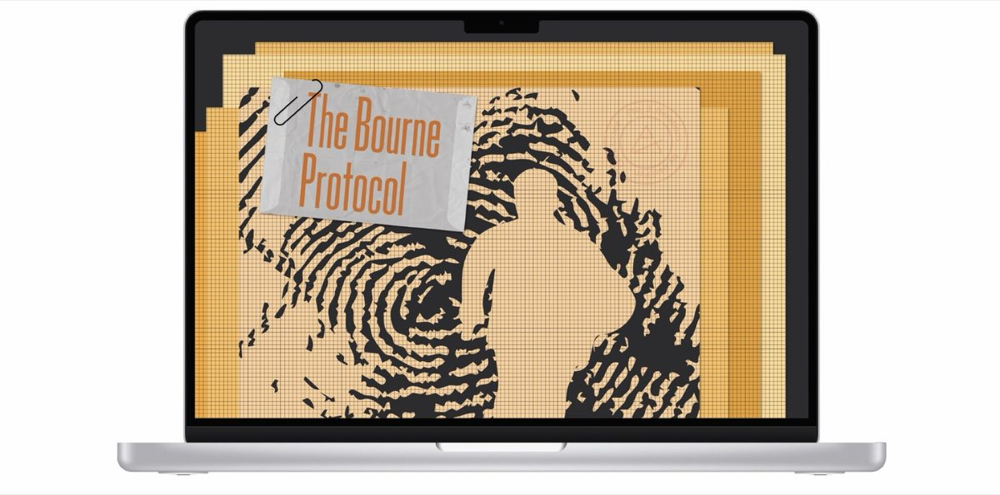
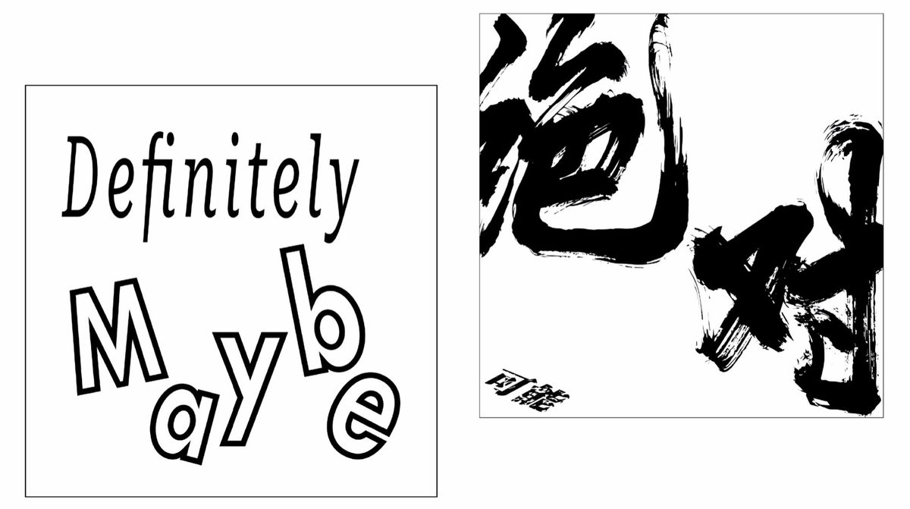
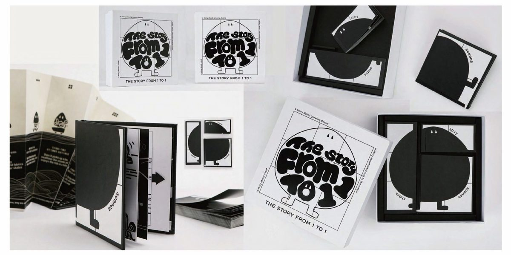
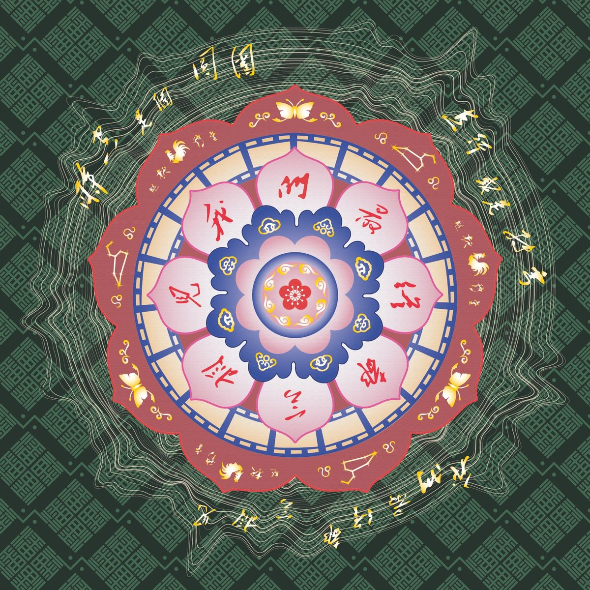
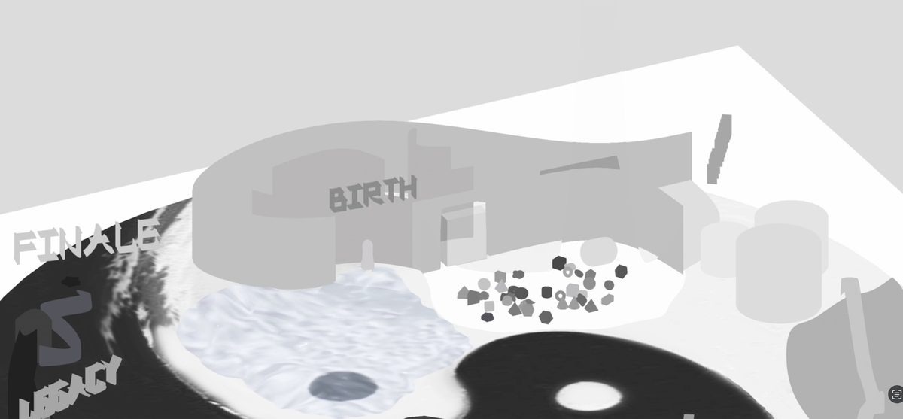

The Bourne Protocol
50 poster iterations inspired by The Bourne Identity, expanded into an interactive decryption game in a Figma prototype.

Twelve projects, grouped by what connects them to my research.
Games, books and stories that only work when someone acts on them. They ask what my research asks of comment sections: what makes people take part?
50 poster iterations inspired by The Bourne Identity, expanded into an interactive decryption game in a Figma prototype.

An interactive picture book, map and colored pencil kit that introduces children to data through a non-intimidating, immersive experience.
A creative coding project combining an interactive storytelling website and a Teachable Machine experience to promote an event.
Work that moves between Chinese and English, and between old forms and new ones.
A book exploring everything that has influenced me through nine chapters of reflection, inspired by the Chinese philosophy of Jiu Jiu Gui Yi, the idea that all things return to their origin.
A product line drawn from artifacts in the Luoyang Museum: a silk scarf, acrylic clips and their posters, and a tote bag inspired by the pattern of Eastern Han dynasty dancing figurines.
Typography exploration of oxymorons in English and Chinese. In Definitely Maybe, steady letters for one word sit against unsteady letters for the other.

How stories get told, through animation, book structure and film posters.
A Risograph animation in which a battle moves across different visual styles and universes, and turns out to be a designer’s endless struggle with Adobe Illustrator.
A story of returning to simplicity and origin, told through pop-up, flip, and accordion book designs.

A series of movie poster redesigns exploring the expressive power of typography with minimal graphic elements.
Identity, pattern and 3D work from my studio courses.
A branding project for Varia Academy, a fictional Slovenian art school, blending traditional and contemporary design through the principle of inconsistency.
Personal Pattern design exploring self-reflection and personal identity, and Future Pattern of imagination and aspirations for the future.

A 3D exploration game reflecting life's journey through themes of balance, cycles, and continuous discovery.
